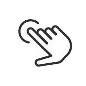

Voorwoord
Ik ben vast niet de enige die na een lange, frustrerende zoektocht naar de perfecte iconen heeft gedacht ‘ik maak de volgende keer gewoon mijn eigen.’ Nu was mijn kans om het ook te doen. Iconen moeten begrijpelijk zijn en gelijk duidelijk maken wat het representeerd. Zo kun je tekst ondersteunen of zelfs helemaal weg laten (een floppy disc icoon betekent bijvoorbeeld opslaan). Omdat ik er naartoe wil heb ik iconen voor de emigratie website van Nieuw Zeeland gemaakt.
Benodigheden:
- Testpersonen